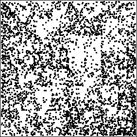
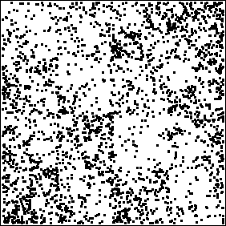
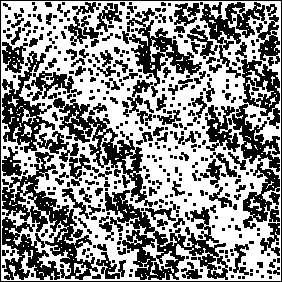
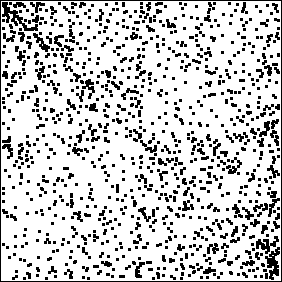

| Here are some more examples of IFS driven by DNA sequences.
Click each small picture for a larger version in a new woindow. |
| First, three examples from ion channels in human cardiac cells. |
|
 |
 |
 |
| potassium channel |
potassium channel |
sodium channel |
|
| From the University of Washington human genome site
http://www.genome.washington.edu/UWGC/
here are four examples from chromosome 7. |
|
| Finally, to show another departure from the predominant pattern of many points along the AT line,
here is the IFS driven by a yeast sequence. |
|
 |
| The interpretations of these pictures is still being investigated.
Stay tuned. |